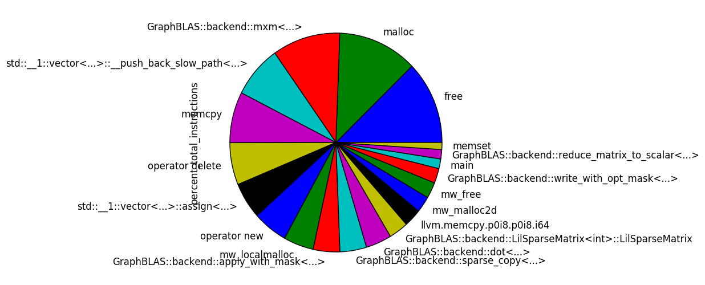
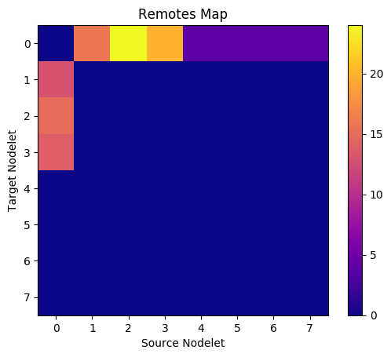
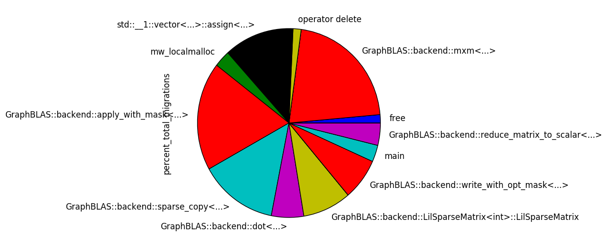

Command line:
run_emu_tc.mwx dataset/4x4dataset/dataset_4x4_nnz10.tsv
Active threads per nodelet over time
Total instructions executed by function
i.e. what percentage of thread execution time was spent in a given function?

Memory Map
Local memory traffic and migrating reads
Remotes Map
Remote writes and remote atomics

Percent of total migrations grouped by function
i.e. what percentage of total thread migrations occurred in a given function?

Migrating instructions
See additional context by searching for these addresses in the run_emu_tc.filt.asmdump.